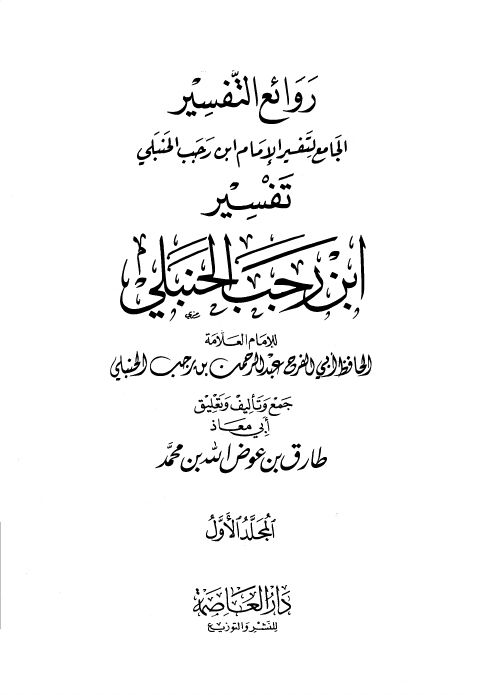

Downloads need an internet connection.
روائع التفسير الجامع لتفسير الإمام ابن رجب الحنبلي
Authors: ابن رجب الحنبلي
Editors: طارق بن عوض الله بن محمد أبو معاذ
Publishers: دار العاصمة
**▫️ العنوان: روائع التفسير الجامع لتفسير الإمام ابن رجب الحنبلي** ▪️ المؤلف: #عبد_الرحمن_بن_رجب_الحنبلي_أبو_الفرج ▫️ المحقق: #طارق_بن_عوض_الله_بن_محمد_أبو_معاذ ▪️ الناشر: #دار_العاصمة ▫️ تاريخ النشر: 2001م 1422هـ ▪️ بلد النشر: الرياض، #السعودية ▫️ الطبعة: 1 ▪️ عدد الأجزاء: 2 ▫️ الصفحات: 1570 ▪️ نوع الوعاء: #كتاب ▫️ التصنيف الرئيسي: #التفسير_وعلوم_القرآن ▪️ التصنيف الفرعي: #التفسير ۪